Префектура Оита · Беппу · онсэны и искусство
Беппу: онсэны и современное искусство в одном квартале
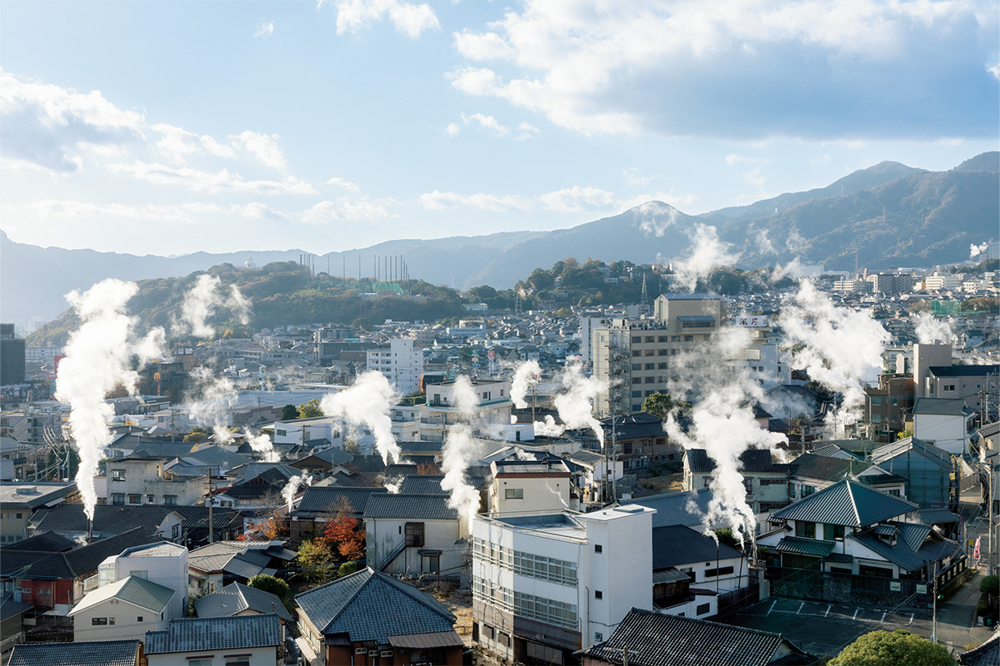
Беппу знают по горячим источникам: по их числу город первый в мире. За последние двадцать лет здесь появилось ещё одно занятие для гостей. Между общественными купальнями и узкими переулками можно бродить от одной работы современного художника к другой.
Город
Источники, которым тысяча триста лет
Онсэны Беппу упоминаются уже в «Иё-но куни фудоки», описании соседней провинции Иё начала VIII века. Из десяти типов горячей воды, которые различают в Японии, здесь встречаются семь. Город делится на восемь онсэн-районов, их вместе называют Беппу-хатто. В Каннаве над улицами стоит пар, а в Хамаваки сохранились дома бывшего квартала развлечений. Кто обойдёт все восемь, увидит и разные воды, и старые улицы, и тихую природу.
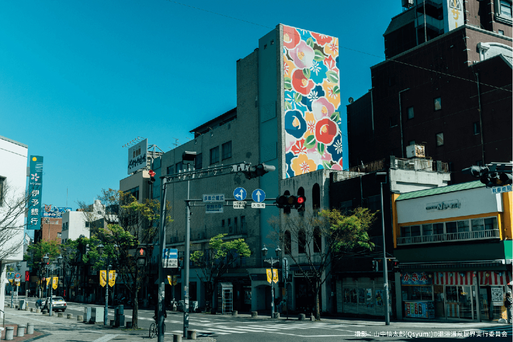
Но последние годы город славится не только водой. Художник родом из префектуры Оита поддержал горожан, которые взялись оживлять Беппу, и в 2005 году основал некоммерческую арт-организацию BEPPU PROJECT. Вместе с жителями и мэрией она проводит фестивали и выставки и каждый год принимает художников, которые подолгу живут и работают в городе.
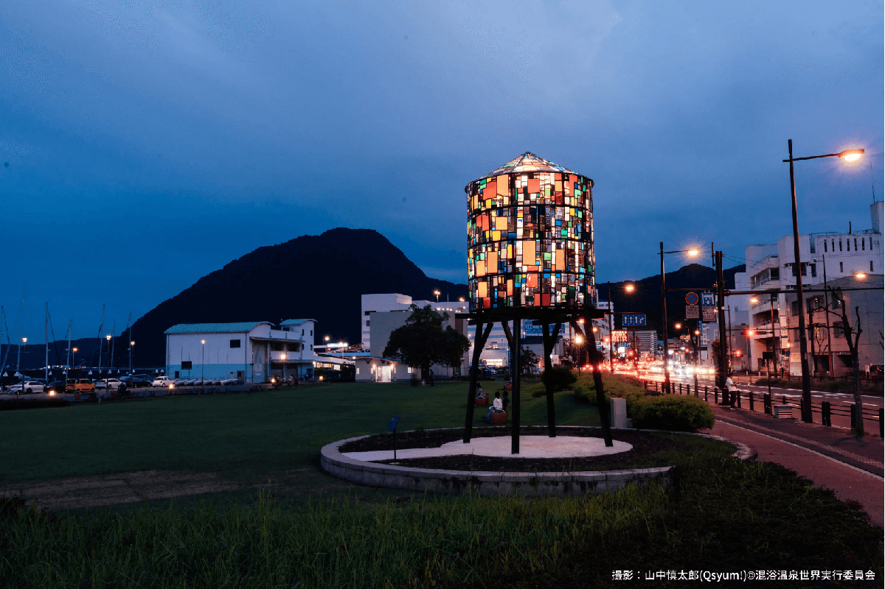
Искусство здесь вписано в повседневную жизнь, в первую очередь в жизнь общественных купален. В городе открылись арт-отель GALLERIA MIDOBARU и Jigoku Onsen Museum, где онсэн стал основой для развлечений, а также новые магазины. Улицы Беппу проложены сеткой, между ними петляют переулки, и на прогулке то и дело натыкаешься на арт-объект или новую лавку.
Как всё началось
BEPPU PROJECT: искусство, которое расходится кругами
В Беппу люди разного пола и из разных стран раздеваются и вместе пользуются тем, что дала природа. На этой особенности города BEPPU PROJECT и построила свою работу. В 2009 году она провела фестиваль современного искусства «Конъёку онсэн сэкай», то есть «Мир смешанных купален»: работы разместили прямо в жилых кварталах. С 2016 года фестиваль «in BEPPU» каждый год приглашает одного художника или одну группу с персональной выставкой. Среди гостей был Аниш Капур, и имя Беппу узнали в мире искусства далеко за пределами Японии.
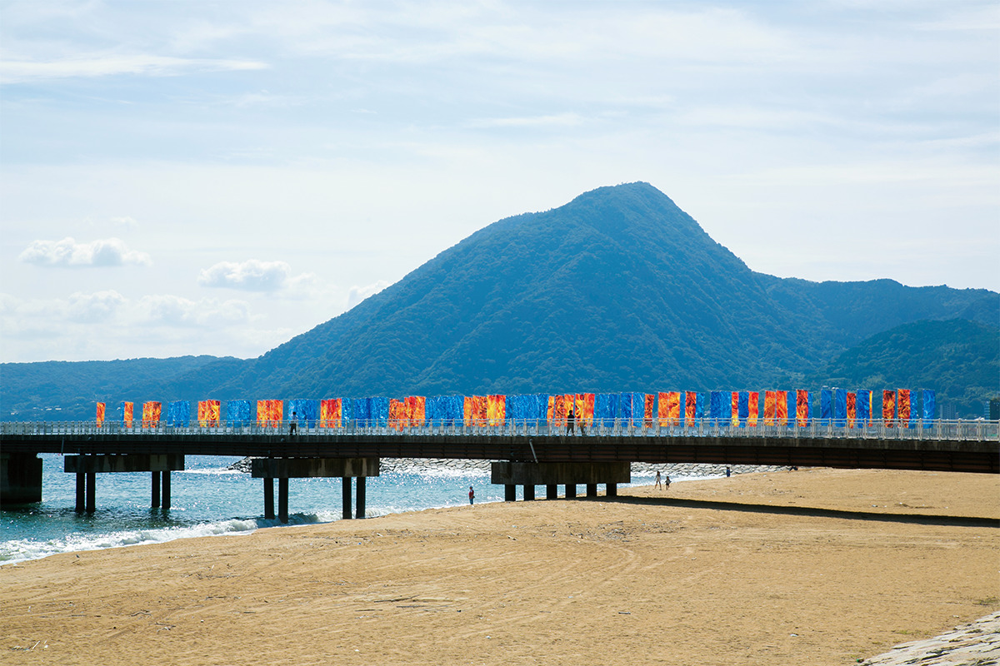
Основатель организации сам художник с международной карьерой, и он привёз в город многих известных мастеров. Хронология получилась такой: в 2009 году первый фестиваль с групповой выставкой, в 2010-м праздник культуры для горожан Beppu Art Month, в 2014-м проект настенных росписей «Весь город музей», в 2016-м «in BEPPU», в 2022-м программа городского искусства ALTERNATIVE-STATE.
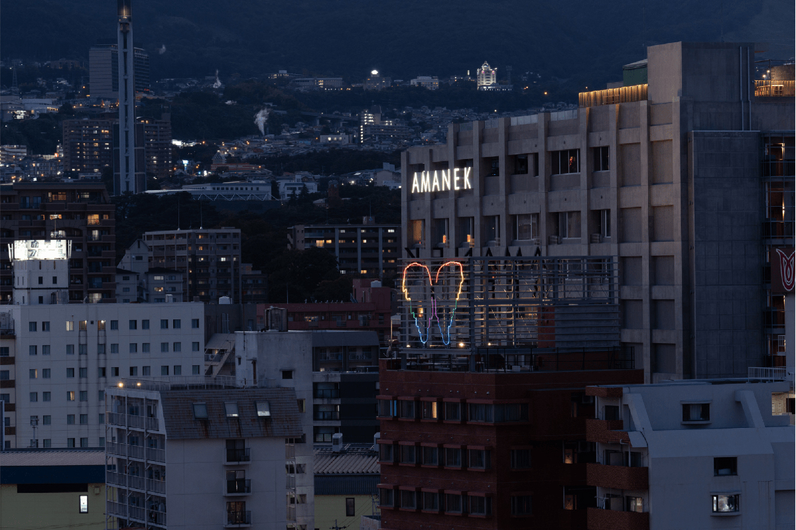
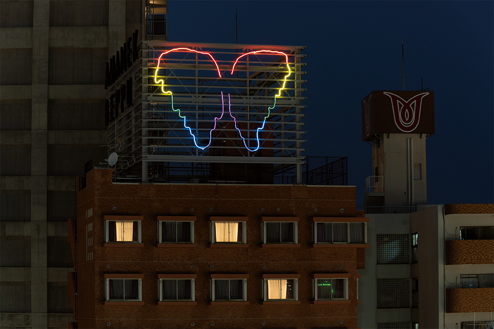
Под девизом «Городскую баню сделать сокровищем района» художники расписали изнутри три общественные купальни. Молодым авторам организация сдаёт жильё с мастерской в доме «Киёсима апато» (в 2023 году за 10 000 иен в месяц), а праздник Beppu Art Month открыт для всех горожан. Так искусство создаёт то, что социологи называют социальным капиталом: связи между людьми в районе.
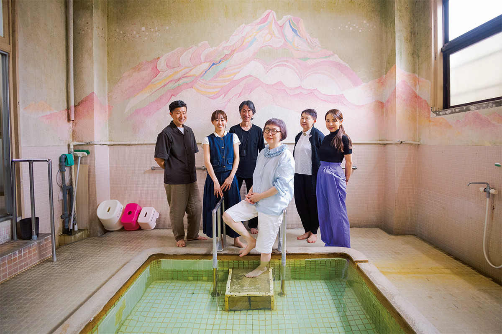
В 2022 году основатель передал руководство другому человеку: он считает, что одна и та же фигура не должна вечно стоять во главе, иначе организация не проживёт долго. В 2023 году BEPPU PROJECT получила главный приз премии JR Kyushu за развитие туризма на Кюсю, Член жюри, архитектор, заметила, что городские арт-проекты трудно удержать надолго, и высоко оценила то, как основатель думает о будущем.
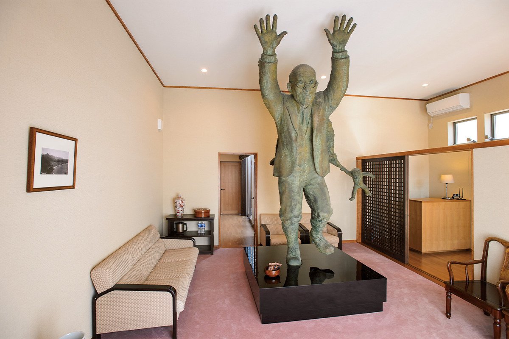
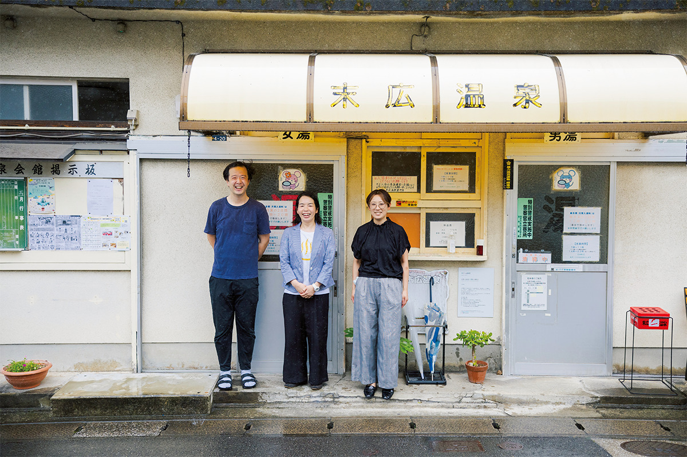
Пары
Четыре прогулки: искусство и купальня по соседству
Самый простой способ увидеть Беппу таким, какой он теперь: соединить арт-адрес с соседней купальней. Ниже четыре таких пары.
«Киёсима апато» и «Суэхиро онсэн»
«Киёсима апато» это жилой дом на 22 комнаты, построенный сразу после войны. Теперь здесь живут и работают художники: жильцы меняются раз в год, в доме проходят выставки и другие события. Посмотреть дом можно, если договориться заранее.
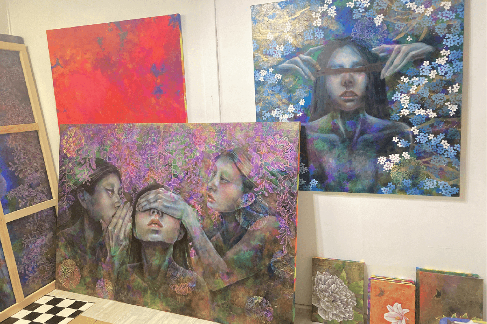
«Киёсима апато»
- Адрес
- префектура Оита, Беппу, Суэхиро-мати, 2-27
- Телефон
- +81 977-22-3560 (BEPPU PROJECT)
- Цены / Вход
- осмотр возможен по записи не позже чем за два рабочих дня
В двух шагах стоит «Суэхиро онсэн», купальня, куда ходят местные. На стене над бассейном художница, которая жила в «Киёсима апато», написала гору Юфу и гору Цуруми. Вход стоил 200 иен в 2025 году.
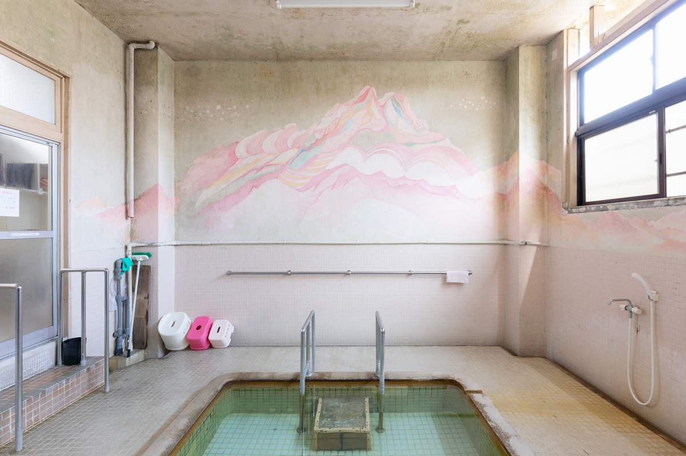
«Суэхиро онсэн»
- Адрес
- префектура Оита, Беппу, Суэхиро-мати, 4-20
- Телефон
- +81 90-1530-2387
- Часы работы
- 7:00–11:00, 14:00–22:00
- Выходные
- 15-е число каждого месяца
- Цены / Вход
- 200 иен
SELECT BEPPU и «Такэгавара онсэн»
SELECT BEPPU называет себя «музейным магазином города Беппу»: здесь продают вещи местных авторов и компаний. На втором этаже выставлены раздвижные перегородки фусума, расписанные Майклом Лином.
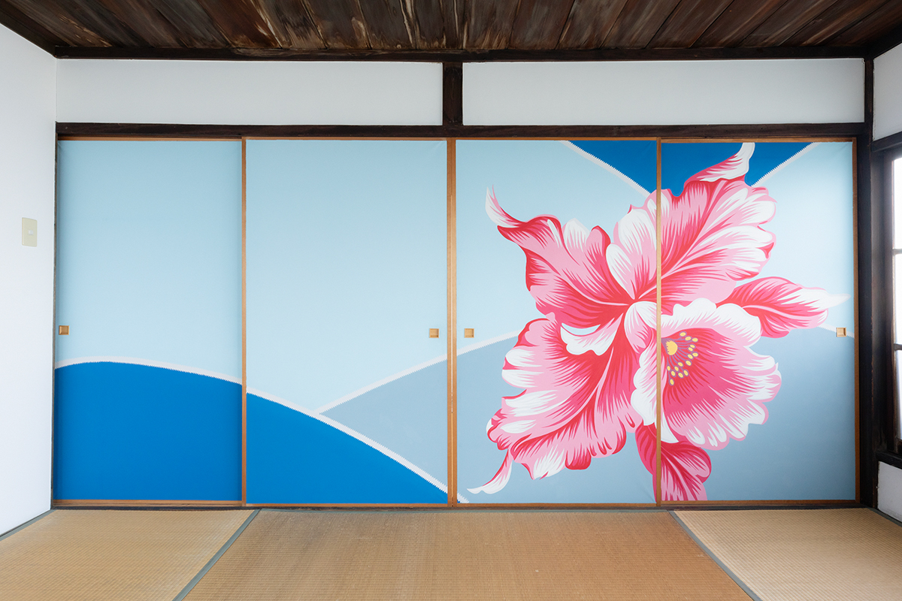
SELECT BEPPU
- Адрес
- префектура Оита, Беппу, Тюо-мати, 9-34
- Телефон
- +81 977-80-7226
- Часы работы
- см. сайт
- Выходные
- вторник и среда (в праздники открыто)
- Сайт
- selectbeppu.com
Рядом «Такэгавара онсэн», символ Беппу. У здания пышная крыша с изогнутым фронтоном карахафу. Кроме обычной купальни здесь есть знаменитая песчаная ванна. Взрослый билет на обычную купальню стоил 300 иен в 2025 году.
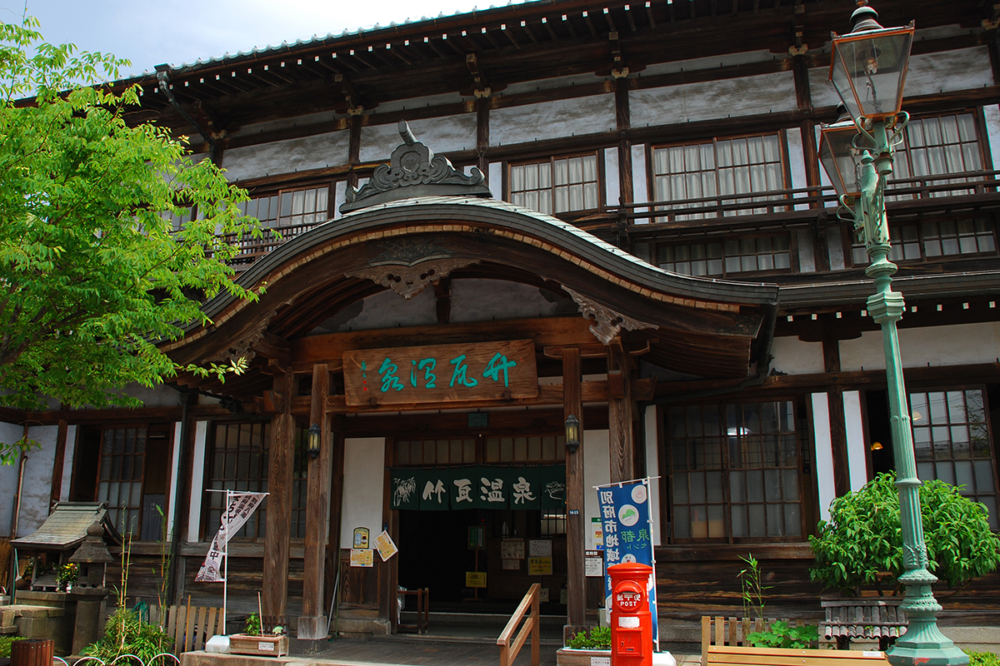
«Такэгавара онсэн»
- Адрес
- префектура Оита, Беппу, Мото-мати, 16-23
- Телефон
- +81 977-23-1585
- Часы работы
- обычная купальня 6:30–22:30, песчаная ванна 8:00–22:30 (последний вход в 21:30)
- Выходные
- третья среда месяца (если праздник, то на следующий день)
- Цены / Вход
- взрослые 300 иен, дети 100 иен
Jigoku Onsen Museum и «Каннава муси-ю»
В Каннаве Jigoku Onsen Museum рассказывает, как рождается горячая вода и как складывалась история онсэнов Беппу. При музее работает магазин. Взрослый билет стоил 1500 иен в 2025 году.
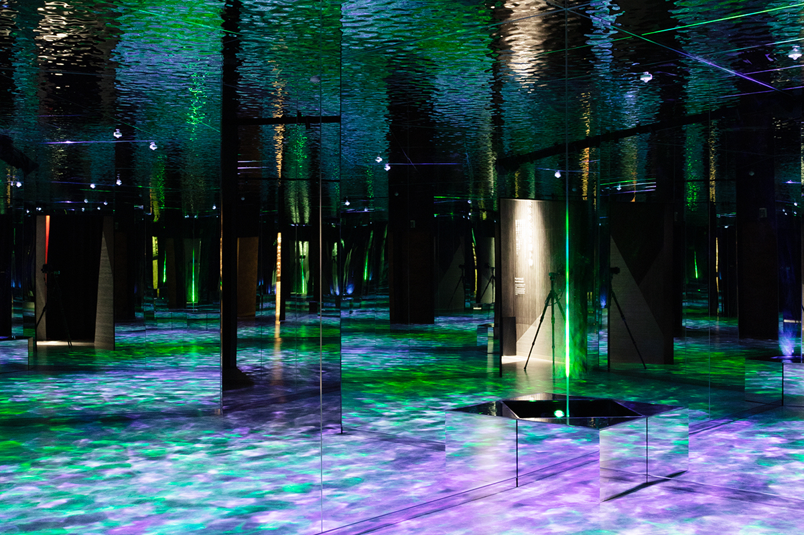
Jigoku Onsen Museum
- Адрес
- префектура Оита, Беппу, Каннава, 321-1
- Телефон
- +81 977-84-7858
- Часы работы
- 9:00–18:00 (последний вход в 17:30)
- Выходные
- нерегулярно
- Цены / Вход
- взрослые 1500 иен, школьники 1000 иен
По соседству «Каннава муси-ю», паровая баня, которая работает со времён Камакура (XII–XIV века). В каменной камере пол устлан сэкисё, лекарственной травой, растущей только у чистых горных ручьёв. Гость ложится на неё, как в самой первой сауне. Вход стоил 700 иен в 2025 году, пускают с возраста средней школы.
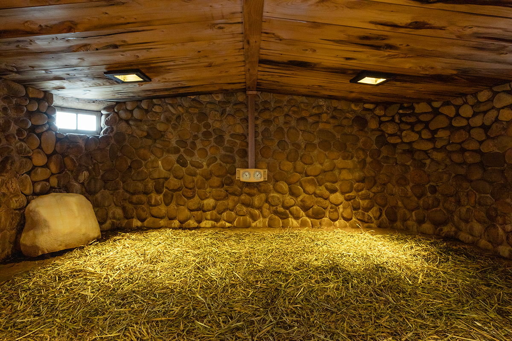
«Каннава муси-ю»
- Адрес
- префектура Оита, Беппу, Каннава-ками, 1
- Телефон
- +81 977-67-3880
- Часы работы
- 6:30–20:00 (последний вход в 19:30)
- Цены / Вход
- 700 иен (для учащихся средней школы и старше)
«Хамаваки-но нагая» и «Хамаваки онсэн»
«Хамаваки-но нагая» это гостевой дом в перестроенном рядовом доме нагая, которому больше ста лет. Его идея: «ночевать внутри искусства». Здесь всего две комнаты, совсем не похожие друг на друга: «Белая коробка» и «Небесный сад». Ночь без питания стоила от 9000 иен с налогом и сервисным сбором в 2025 году.
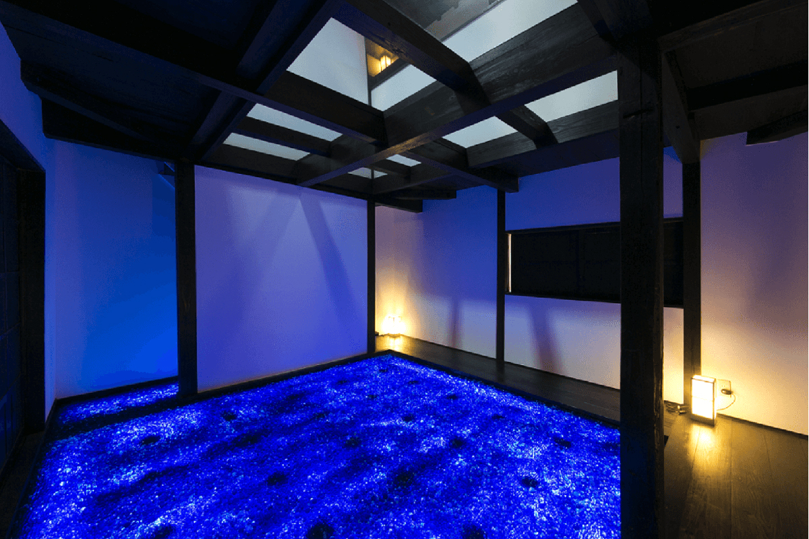
«Хамаваки-но нагая»
- Адрес
- префектура Оита, Беппу, Хамаваки, 1-10-3957-3
- Телефон
- +81 977-22-3560 (BEPPU PROJECT)
- Цены / Вход
- ночь без питания от 9000 иен (с налогом и сервисным сбором)
Хамаваки вместе с Каннавой считают местом, откуда начались онсэны Беппу. «Хамаваки онсэн» принадлежит городу и, что редкость для муниципальных купален, работает до глубокой ночи. Купальня живёт жизнью района. Взрослый билет стоил 200 иен в 2025 году.
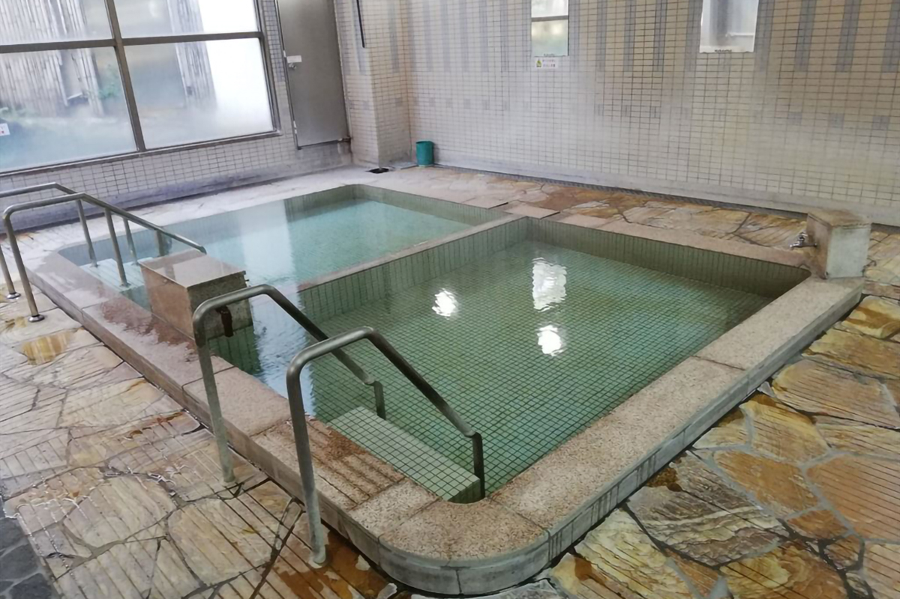
«Хамаваки онсэн»
- Адрес
- префектура Оита, Беппу, Хамаваки, 1-8-20
- Телефон
- +81 977-25-8118
- Часы работы
- 6:30–1:00 (с 14:00 до 15:00 уборка, купаться нельзя)
- Выходные
- третий понедельник месяца (в праздники возможны изменения)
- Цены / Вход
- взрослые 200 иен, дети 100 иен
Фото: Синтаро Яманака, Хиромаса Оцука, Такаси Кубо, Нобухиро Вакия.